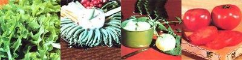

Last spring, when I decided to do an advance "grow-test" on vegetable varieties that would be offered in 1980, I thought the task would be a snap. But as luck would have it, the summer of 1979 proved to be the most horrendous growing season that I (or any of my eastern Kentucky neighbors) could ever recall. Unseasonably cool temperatures and nearly constant rain were the culprits. The weather hindered the growth of most plants, of course, and actually aided the development of many diseases and insect pests. However, I figure that any vegetables that were able to perform well under such circumstances proved themselves to be winners ... so here they are!
Peas are one of the first crops to be planted each spring, so it's fitting that we begin our vegetable review with them. And this year, the big legume news concerns Sugar Snap peas ... an "eat-it-all" 1979 All-America gold medal winner that's just as tender and delicious-both peas and pod-when mature as other sugar peas are in their childhood. The tasty hybrids are a delight to grow, too: Just sow the seeds, provide some support for the vines to climb, and stand back! Don't overlook the more traditional snow peas, either. Burpee's Snowbird, Epicure's Pheno, and Unwin's Tezieravenir are all excellent low-growing bush varieties.
Potatoes are usually planted early, too, and I had excellent results from a pair of varieties this year. It's a known "fact" hereabouts that red potatoes just don't do well in our mountainous country, but Lasoda (Olds Seed Co.) and Ohio Early (Farmer Seeds) proved that bit of local wisdom wrong. Ohio Early was just that: very early . . . and very tasty. The Lasoda potatoes were not only delicious, but also cropped more heavily . . . still, I'd have to give a slight culinary edge to the Buckeye State spuds.
Lettuce is probably the most popular cold weather crop, and-this year-a lot of gardeners will be thanking Burpee for introducing Green Ice and Royal Oak . . . two of the finest salad greens ever offered. Green Ice-a loosehead lettuce of the Salad Bowl type-is unusually crisp, resists bolting, and has a wonderfully glossy dark green color that can really perk up a salad!
Royal Oak, on the other hand, is an improvement over the standard Oak Leaf variety, with thick and succulent midribs. It's a particularly good choice for late planting because it will resist bolting until well into the summer. And, should your tastes run to heading lettuces, try the new bibb-type (from Unwin) called Irma. The delicate green heads grow remarkably large and are unsurpassed in quality.
Kohlrabi has never been on most folks' vegetable hit parade, but one 1979 All-America silver award winner known as Grand Duke seems about to change the plant's reputation. The "Duke" matures in about 50 days . . . producing loads of baseball-sized specimens that-steamed and with a little salt, pepper, and butter on top-will provide meals fit for a gourmet!
Cabbage has got to be one of the most versatile vegetables around. Whether you serve it steamed, stuffed, or slawed, it's always delicious. And no list of new "rabbit food" varieties would be complete without a mention of Savoy Ace, a highly popular All-America winner from three years back.
If you've shied away from the crumple-leaf cabbages in the past, now's the time to forget your prejudice. To put it quite simply, Savoy Ace is the finest new cabbage to come along since the introduction-many years ago-of the famed Jersey Wakefield. These solid, round, three-to four-pound heads are a lovely shade of pale green, and they're perfect for all uses except sauerkraut. (If that tangy comestible is your passion, then O-S Cross-available from Earl May Seeds-should be your choice. The huge, flat, 8- to 12-pound, creamy white heads make a fine cole slaw, too.)
Among the best of this year's cabbage introductions are Erin (from Canada's Alberta Seed Co., and named for its beautiful emerald green coloring), Green Giant (from Dessert Seeds ... a quality cooking cabbage that-surprisingly- can also be used for kraut), and Bowling Ball (an F-l hybrid from Herbst).
Broccoli has become a widely grown garden vegetable in the past few years, as more varieties have been developed specifically for the home gardener. One of my own favorites is Green Hornet (from Stokes), which is extremely early, very productive, and absolutely delicious. Jupiter (Dessert Seed Co.) is a taste-tempter, too . . . with an additional plus: It will produce one side bunch after another all season, if you keep harvesting the delicious buds.
Cucumbers are one of the most popular warm-weather crops, and-with the availability of the new, sweet, thin-skinned, "burpless" varieties-many more people are growing them. Sweet Slice (Harris Seeds) has all the obvious attributes of the burpless 'cumbers, along with a more traditional blocky appearance. Tokyo Slicer (Unwin) resembles Sweet Slice but is slimmer. Its quality is superb, and the cuke flat doesn't know when to stop growing!
If you prefer the more traditional slicing types, however, I can heartily recommend Setter (from Abbott & Cobb). This cultivar is a decided improvement over the old standby, Poinsett and-better yet-actually seems immune to the striped cucumber beetle!
Sweet corn and summer are almost synonymous to many Americans. Since the introduction of Silver Queen several years ago (It's the variety many people still consider the standard of eatin' excellence), plant breeders have been busy developing new and excellent white-ker-neled varieties. In my experience, the very best early maturing white sweet corn is Tokay (Harris Seeds). This cultivar is table-ready in about 70 days, and very close to Silver Queen in quality. Harris also recently introduced Quicksilver, a delicious midseason variety.
Of course, many people prefer yellow-kerneled corn. If that's the case with you, you'll be glad to know that one of the great surprises in my garden last summer was the performance of a golden English variety called Kelvedon Glory (Unwin).
The British Isles-with their cool, wet summers-aren't known as the home of fine sweet corn, but this cultivar is every bit as good as any early maturing American type I've ever grown. It germinates and grows in cold soil, is very productive, and tastes just fine! On the other hand, folks who want an early midseason yellow corn should try Carmelet (Seed-way), a variety which offers a delicious, nutty ear that's fine for canning. The main-season types (those that mature at the same time as does standard Golden Bantam) are the cream o' the corn crop . . . and I've never grown a more outstanding maize than Flavorvee (Stokes). The vegetable is ready for the table in 86 days and features large ear size, husky plants, and kernels of superb quality. The only other main-season corn that even approaches Flavorvee's excellence is A & C Number 18 (Abbott & Cobb).
Perhaps the most interesting corn news, though, is that some of the often neglected-and unfairly so!-bicolored varieties have come to the attention of plant breeders . . . and one merchant (Harris Seeds) has a full range of new and colorful types. Sweet Sue-a productive and tasty late-maturing corn-is perhaps the best of Harris's bunch. If you want an earlier bicolor, though, try Duet from Johnny's Selected Seeds. It has a tender, delicate flavor that's sure to be appreciated by sweet corn lovers.
Tomatoes were, without a doubt, the major crop disappointment in my area last summer. While the love apples do need a lot of moisture, they just won't grow well in the gloom of almost constant rain.
Only a few types were tough enough to perform well, and Burpee's Big Girl was the best of the lot. My "girls" resisted all the troublesome tomato diseases, produced huge (from one- to two- pound ) fruits, and tasted fine, too! Beef master or Better Boy might have a slight edge in quality, but for sheer perseverance Big Girl took the prize this year!
Other large-fruited types that managed to overcome the weather included The Godfather (Herbst) . . . Kille Number 7 (Ledden) . . . Superstar (Jackson & Perkins) . . . Freedom (a new jointless type from Abbott & Cobb) . . . Stake-breaker (a great new pole-grower from Hastings) . . . and Robust Pink (an extra large, juicy, pink tomato from Laval of Canada). I also found that a few of the smaller-fruited, earlier maturing varieties managed to perform well. . . including Basketvee (Stokes) and Jetstar and Redpack (Harris).
My peppers suffered from the wet weather right along with the tomatoes, and very few produced really well. Karlo (Johnny's Selected Seeds) and Early Niagara Giant (Stokes) were two of the best, and each yielded loads of tasty pods on strong plants.
Beans were adversely affected by the cold and rain, too, but Piano (a Romano type from Epicure), Gitana (a new introduction from Unwin that resembles the old Icicle bunch bean), and Favornel (a European variety from Epicure) all managed to overcome the weather and produce a good crop.
Among my pole beans, the only two that did well enough to deserve any mention were Promo (W.H. Perron) and Champagne (Johnny's Selected Seeds). Champagne isn't a new type . . . it's just unknown. Give this heirloom variety a try if you want real old-fashioned taste!
Carrots and beets did manage to produce well last year, and there were several varieties worth noting. I found Tamahata (from Gleckers Seedsmen) and Canpack (from Dessert Seeds) to be just about as good as carrots can get, while First Crop (Vesey Seeds) and Tardel (Epicure) were the best of the beets.
Unfortunately, some of my test plantings just plain didn't turn up a single variety that survived the inclement season. My watermelons were nearly a total loss, and the cantaloupes (believe it or not) did even worse. Of course, next year will bring different weather-at least we hope it will-and 1979's failures may well be 1980's successes.
At any rate, I can guarantee that the varieties mentioned in this article have all survived a "trial by water" . . . and that they stocked our larder with delicious (and nutritious) victuals. To sum up briefly, here are the seed that should be a must for the home garden in 1980: Sugar Snap peas, Savoy Ace And Erin cabbage, Setter cucumbers, Lasoda potatoes, Kelvedon glory and Flavorvee sweet corn, Green Ice and Royal Oak lettuce, and Grand Duke kohlrabi. Now just where did I put those seed catalogs . . . ?
EDITOR’S NOTE: For the addresses of all the seed suppliers mentioned in this article, consult MOTHER’s Seed Company “Wishbook” Guide on page 174.
|
 PHOTOS COURTESY OF BURPEE SEED CO.
|
|
|